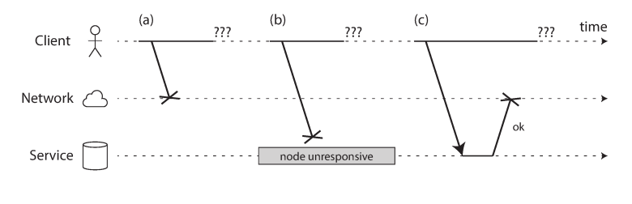
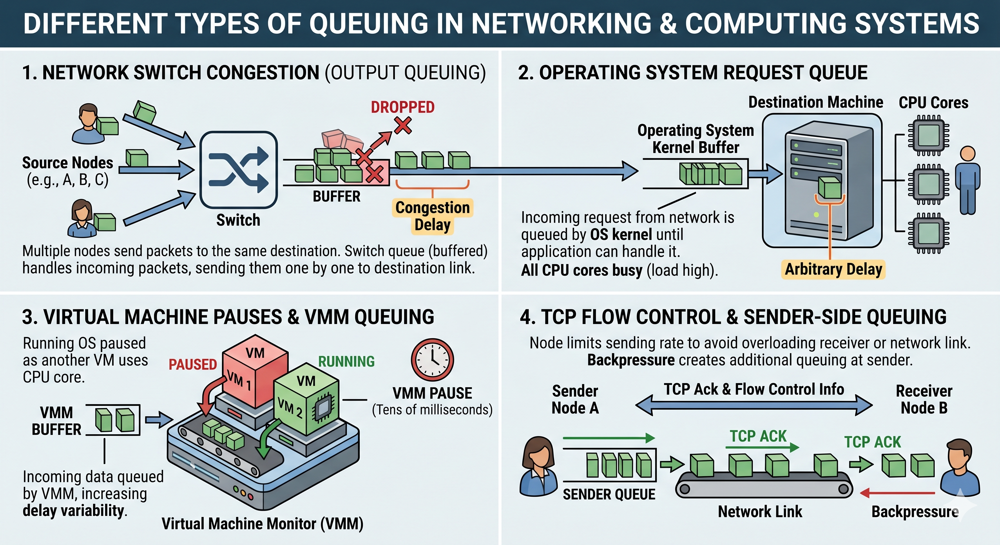
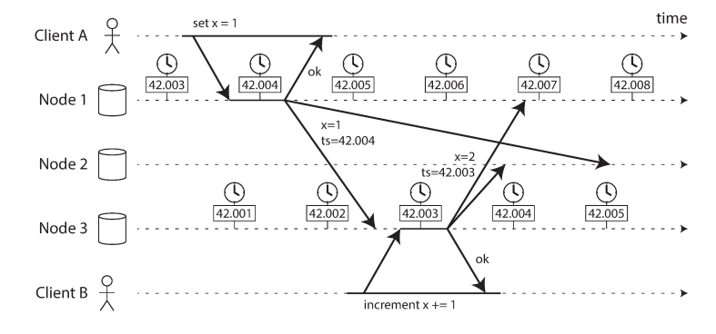

The Trouble with Distributed Systems
Single-Node vs Distributed Systems: Developer Mindset
| Aspect | Single-Node Developer | Distributed Systems Developer |
|---|---|---|
| Failure Model | Failures are rare and total (process crash) | Partial failures are normal—some nodes fail, others continue |
| Failure Detection | Immediate and obvious (exceptions, crashes) | Ambiguous—timeout could mean crash, delay, or network loss |
| Communication | Function calls, shared memory (reliable, instant) | Message passing over network (lossy, delayed, duplicated) |
| Latency Assumption | Predictable, low (ns–µs) | Variable, unbounded (ms–seconds) |
| Time Model | Single system clock; consistent ordering | No global clock; clock drift; ordering is uncertain |
| Event Ordering | Deterministic execution order | Partial ordering only; causality must be inferred |
| State Management | Single source of truth | Multiple replicas; state can diverge |
| Consistency | Strong consistency by default | Tradeoffs: consistency vs availability vs latency |
| Concurrency | Threads/processes with shared memory | Independent nodes; no shared memory; coordination is hard |
| Error Handling | Exceptions are exceptional | Failures are expected; retries are common |
| Retry Semantics | Usually unnecessary | Must consider idempotency and duplicate effects |
| Knowledge Model | Node has full, accurate system view | Node’s view is incomplete and possibly wrong |
| Leadership / Coordination | Simple (in-process locks) | Requires consensus, leader election, leases |
| Edge Cases | Limited and predictable | Combinatorial explosion of edge cases |
| Debugging | Reproducible, local debugging | Non-deterministic, timing-dependent, hard to reproduce |
| Correctness Definition | Correct output for given input | Safety + Liveness guarantees |
| Performance Focus | CPU, memory optimization | Latency, throughput, fault tolerance tradeoffs |
| Design Philosophy | “Make it work efficiently” | “Assume everything can fail—design for recovery” |
| Core Abstraction | Deterministic computation | Unreliable communication + uncertainty |
| Typical Bugs | Logic errors, memory bugs | Race conditions, split-brain, stale reads, data loss |
| Mental Model | Program = function | System = protocol among unreliable participants |
Single-node programming is about controlling execution. Distributed systems programming is about surviving uncertainty.
**Q & A**
Which row introduces the *biggest conceptual break* from what you already know?
The core challenges of distributed systems stem from three primary areas of unreliability:
- Networks: Asynchronous packet networks offer no guarantees on delivery or latency. Timeouts are the only mechanism for failure detection, yet they cannot distinguish between a crashed node, a network outage, or a slow response.
- Clocks: Hardware clocks drift and synchronization protocols like NTP are subject to network delays. Relying on timestamps for ordering events often leads to silent data loss.
- Processes: Unpredictable "stop-the-world" garbage collection pauses, virtualization "steal time," and I/O latencies can halt a process at any moment, causing it to lose leadership or violate lease agreements.
To operate reliably, engineers must abandon optimism and assume that anything that can go wrong will go wrong. Reliability is achieved by building fault-tolerant mechanisms—such as quorums and fencing tokens—that allow the system as a whole to function even when its individual components are unreliable.
**Q and A**
- Which of these do you think is the hardest to deal with in practice?
- In a single-machine program, which of these do we usually ignore?
Faults and the Reality of Partial Failure
In a single-node environment, hardware is designed to present an idealized system model of mathematical perfection. If an internal fault occurs, the system typically crashes entirely to avoid returning confusing, incorrect results.
In contrast, distributed systems must confront the "messy reality of the physical world." This includes:
- Partial Failure: A state where some components are broken but others are fine. This is nondeterministic; an operation may succeed one moment and fail the next without a clear cause.
- Component Reliability: While supercomputers (HPC) often treat partial failure as total failure (stopping the entire cluster), cloud-based internet services must remain available. They are built from "commodity" hardware with higher failure rates but lower costs, necessitating software-level fault tolerance.
- The Goal: The objective is to build a reliable higher-level system from unreliable underlying components. While this doesn't eliminate all faults, it makes the remaining issues easier to reason about.
Unreliable Networks
Internet services primarily use shared-nothing architectures, where machines communicate solely via asynchronous packet networks (Ethernet/IP). These networks provide no guarantees regarding when a message will arrive or if it will arrive at all.
The Six Points of Failure
When a sender transmits a request and fails to receive a response, it is impossible to distinguish between these scenarios:

- The request was lost (e.g., an unplugged cable).
- The request is waiting in a queue (overload).
- The remote node has failed (crash or power loss).
- The remote node has temporarily stopped responding (e.g., a GC pause).
- The response was lost on the network (misconfigured switch).
- The response was delayed (congestion).
Timeouts and Unbounded Delays
Because delays are unbounded, there is no "correct" value for a timeout.
- Long timeouts: Increase the time users must wait to see an error.
- Short timeouts: Risk prematurely declaring a node "dead," which can lead to cascading failures as load is transferred to already struggling nodes.
Time out estimation: 2d + r where d is the maximum delay to deliver a packet and r is the maximum delay to process a request.
**Q and A**
- Should we always choose a very large timeout to be safe?
- What happens if every node uses aggressive short timeouts?
Network congestion and queueing

-
Network Switch: Multiple sources competing for one link leads to output queuing and congestion delay. If the queue overflows, packets are dropped and must be resent.
-
Operating System: Incoming network requests are queued in the OS kernel until a busy CPU or application can handle them, introducing arbitrary delay.
-
Virtualized Environments: When a running OS (VM) is paused by the VMM to allow another VM to use the CPU, incoming data is buffered by the VMM, increasing delay variability.
-
TCP Sender: Flow control (backpressure) causes the sender to limit its output rate, creating additional queuing before the data enters the network.
Variable Latency: Packet vs. Circuit Switching
| Feature | Packet Switching (Internet/Datacenter) | Circuit Switching (Telephone Network) |
|---|---|---|
| Bandwidth | Opportunistic; shared dynamically. | Fixed and guaranteed for the duration. |
| Utilization | High; optimized for bursty traffic. | Low; bandwidth is wasted if idle. |
| Delays | Unbounded; subject to queueing. | Bounded; no queueing. |
Unreliable Clocks
Distributed systems rely on clocks for timeouts, expiration dates, and event ordering. However, hardware clocks (quartz oscillators) are imprecise and subject to clock drift (varying by temperature and age).
Network Time Protocol (NTP)
NTP is a networking protocol used to synchronize the clocks of computers over a network to a common timebase. It ensures accurate timekeeping for various applications, including GPS and financial services.
Monotonic vs. Time-of-Day Clocks
| Clock Type | Purpose | Behavior |
|---|---|---|
| Time-of-Day | Wall-clock time (e.g., UTC). | Can jump backward if resynced via NTP; unsuitable for measuring elapsed time. |
| Monotonic | Measuring duration (e.g., timeouts). | Guaranteed to move forward; absolute value is meaningless (often nanoseconds since boot). |
Slewing
Slewing in clocks refers to the gradual adjustment of the clock's time to correct for drift, ensuring smooth synchronization without abrupt changes. This process is crucial for maintaining accurate timekeeping in systems like NTP (Network Time Protocol) where precise timing is essential.
Leap seconds
A leap second is an additional second added to Coordinated Universal Time (UTC) to keep it in sync with astronomical time (UT1), which is based on the Earth's rotation. Leap seconds are typically added at the end of June or December to ensure the difference between UTC and UT1 remains within 0.9 seconds.
Language specific timestamps
| Language | Function/Command | Description |
|---|---|---|
| Python | time.monotonic() |
Returns monotonic time unaffected by system clock changes. |
| JavaScript | performance.now() |
Provides a high-resolution monotonic timestamp. |
| Bash | date +%s.%N |
Gets a high-resolution timestamp (not fully monotonic). |

The Danger of Last Write Wins (LWW)
Many databases use timestamps to resolve conflicts. This is dangerous because:
- A node with a lagging clock can silently overwrite data from a node with a faster clock.
- It cannot distinguish between sequential writes and truly concurrent ones.
- NTP synchronization is limited by network round-trip time, making it nearly impossible to ensure perfect ordering across nodes.
Confidence Intervals and TrueTime
A clock reading should be viewed as a confidence interval rather than a point in time. Google’s Spanner uses the TrueTime API to return a range [earliest, latest]. By deliberately waiting for the length of the uncertainty interval before committing a transaction, Spanner ensures that causality is respected across datacenters.
Process Pauses
A node in a distributed system may be "preempted" at any moment, halting execution for seconds or even minutes.
Causes of "Stop-the-World" Pauses
- Garbage Collection (GC): In languages like Java, GC can pause all threads.
- Virtualization: A hypervisor may suspend a VM to allow another VM to use the CPU (steal time).
- Paging/Thrashing: The OS may pause a process to swap memory pages from disk.
- Disk/Network I/O: Synchronous I/O operations can block threads unexpectedly.
The Lease Problem
A common pattern involves a leader obtaining a "lease" to perform writes. If a process is paused after checking that its lease is valid but before performing the write, the lease may expire during the pause. If another node has been elected leader in the meantime, the original node will unknowingly perform an unauthorized write, leading to data corruption.
Knowledge, Truth, and Lies
In a distributed system, a node cannot trust its own perception. It can only know the state of other nodes by exchanging messages, which are themselves unreliable.
Quorums: Truth by Majority
Decisions (such as declaring a node "dead") must be made by a quorum—usually an absolute majority of nodes. This prevents a single "limping" or semi-disconnected node from causing a total system failure.
Fencing Tokens
To prevent a "zombie" leader (one that was paused and replaced) from corrupting data, fencing tokens must be used.
- The lock service issues a monotonically increasing token with every lease.
- The storage service records the highest token it has processed.
- Any write request with an older (lower) token is rejected.
Byzantine Faults
While most datacenter systems assume nodes are "unreliable but honest," Byzantine faults occur when nodes "lie" or send corrupted data (common in aerospace or blockchain).
- Byzantine Fault Tolerance (BFT): Extremely complex and expensive to implement; generally unnecessary for internal datacenter applications where nodes are controlled by a single organization.
System Models and Correctness
To prove the correctness of distributed algorithms, engineers use formalized System Models based on timing and fault assumptions.
Timing Models
- Synchronous: Bounded delays and clock errors (unrealistic for most).
- Partially Synchronous: Behaves synchronously most of the time but allows for occasional unbounded delays (the most practical model).
- Asynchronous: No timing assumptions; no clocks; very restrictive.
Safety vs. Liveness
- Safety: "Nothing bad happens." If violated, the damage is permanent (e.g., a duplicate fencing token).
- Liveness: "Something good eventually happens" (e.g., a node eventually receives a response). Liveness properties are allowed to fail during network outages but must recover once the network is restored.
Final Insight: "In distributed systems, suspicion, pessimism, and paranoia pay off." Theoretical models are essential for uncovering hidden flaws, but real-world implementations must always be prepared for the "impossible" to happen.